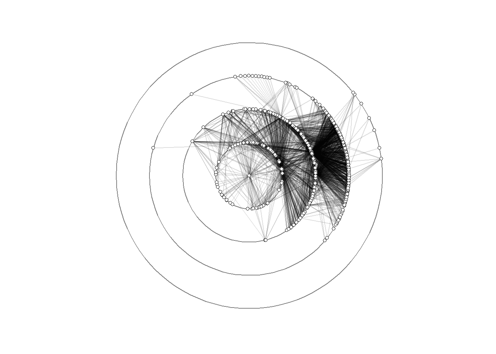
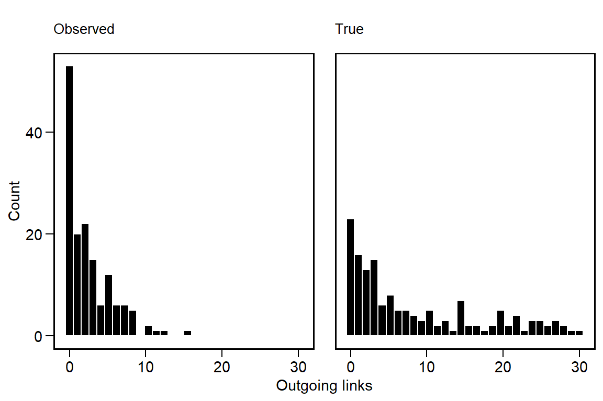

Introduction
Food webs are often represented as network graphs, where nodes represent species and links represent observed feeding interactions, or potential feeding interactions inferred from species traits. The Web of Life database houses many such graphs, showcasing their interesting structural patterns and the tremendous efforts ecologists have gone to in order to collect these challenging data.
A particular challenge when collecting food web data is knowing whether sampling effort is sufficient. This is particular relevant when studying networks because if even a single rare species goes unobserved, it can impact the overall network structure. Since many theories of food webs focus directly on explaining the structure of food webs, measurement models are needed that can help us infer whether the observed structure results from fundamental processes of community assembly or from partial sampling. In this blog post, we explore this measurement problem and develop some preliminary simulations and validations.
To begin, let’s lay out a basic model. Let’s assume that we want to infer species interactions using a hierarchical model (multiple food webs). This let’s us pool information from across multiple webs to understand our ability to detect trophic links.
For each food web \(k = 1,...,K\), we observe pairs of species interactions \(A^{\text{obs}}_{ij,k} \in \{0,1\}\). A value of \(1\) indicates the presence of a link between \(i \rightarrow j\). Given this, we model the probability of a link \(p_{ij,k}\) as
\[ \begin{equation} \text{logit}(p_{ij,k}) = \alpha_k + u_{i,k} + v_{j,k} \end{equation} \]
where \(\alpha_k\) is a baseline interaction rate for web \(k\), and \(u_{i,k}\) and \(v_{j,k}\) are consumer- and resource-specific random effects. We could then say that the “true” set of interactions is Bernoulli distributed
\[ \begin{equation} A^{\text{obs}}_{ij,k} \sim \text{Bernoulli}(p_{ij,k}) \end{equation} \] In other words, there is a probability \(p_{ij,k}\) that we observe a link between \(ij\) in food web \(k\). Such a probability could be directly computed from \(A\). But if sampling is biased, then this probability will inherit this bias. For this reason, we also need a detection model.
\[ \begin{equation} \text{logit}(\phi_k) = \mu_p + \delta_{p,k} \end{equation} \]
We assume that each web has its own rate of detection \(\phi_k\). The parameter \(\mu_k\) is the average log-odds of detection across all food webs, and \(\delta_{p,k}\) is a specific deviation of web \(k\) from the global average, which we model as non-centered: \(\delta_{\phi,k} \sim \mathcal{N}(0,\sigma^2_{\phi})\).
It follows that the probability of observing a link is
\[ \begin{equation} q_{ij,k} = \phi_k \cdot p_{ij,k} \end{equation} \] We use this to amend our original likelihood to
\[ \begin{equation} A^{\text{obs}}_{ij,k} \sim \text{Bernoulli}(q_{ij,k}) \end{equation} \]
In essence, this model assumes that
- If \(A^{\text{true}}_{ij,k} = 0\), then \(A^{\text{obs}}_{ij,k} = 0\).
- If \(A^{\text{true}}_{ij,k} = 1\), then we observe \(A^{\text{obs}}_{ij,k} = 1\) with probability \(\phi_{ij,k}\).
Although false positives are also a possible source of bias, we leave this out of the model, for now.
Finally, we need to declare hierarchical, non-centered priors for all parameters, beginning first with the interaction rates, then the detection probabilities, and finally the random effects. We assume a weakly informative \(\mathcal{N}(0,1)\) prior on all latent deviations, and \(\text{Exponential}(1)\) for all SD.
Interaction rates
\[ \begin{align} \alpha_k &= \mu_{\alpha} + \sigma_{\alpha} \alpha^{(z)}_k \qquad &\text{non-centered} \\ \alpha^{(z)} &\sim \mathcal{N}(0,1) \qquad &\text{latent deviation} \\ \mu_{\alpha} &\sim \mathcal{N}(0,1) \qquad &\text{global mean interaction rate} \\ \sigma_{\alpha} &\sim \text{Exponential}(1) \qquad &\text{global interaction SD} \end{align} \]
Detection
\[ \begin{align} \delta_{\phi,k} &= \mu_{\phi} + \sigma_{\phi} \delta^{(z)}_{\phi,k} \qquad &\text{non-centered} \\ \delta^{(z)} &\sim \mathcal{N}(0,1) \qquad &\text{latent deviation} \\ \mu_{\phi} &\sim \mathcal{N}(0,1) \qquad &\text{global mean detection rate} \\ \sigma_{\phi} &\sim \text{Exponential}(1) \qquad &\text{global detection SD} \end{align} \]
Consumer and resource random effects
\[ \begin{align} u_{i,k} &= \sigma_u u^{(z)}_{i,k}, \qquad &u^{(z)}_{i,k} \sim \mathcal{N}(0,1) \\ v_{j,k} &= \sigma_v v^{(z)}_{j,k}, \qquad &v^{(z)}_{j,k} \sim \mathcal{N}(0,1) \\ \sigma_u &\sim \text{Exponential}(1) \qquad &\sigma_v \sim \text{Exponential}(1) \end{align} \]
Simulation
To test this model, we need to simulate food webs to serve as the “true” sets of interactions, and “observe” our food webs probabilistically from them.
We begin by setting up our parameters.
# ---- Setup ----
set.seed(777)
inv_logit = function(x) exp(x) / (1 + exp(x))
# ---- Parameters ----
K = 5
S = 30
mu_alpha = -2
sd_alpha = 1
sigma_u = 2
sigma_v = 1
mu_phi = -1
sd_phi = 0.5
# generate varying base rates and detection probabilities
alpha_k = rnorm(K, mu_alpha, sd_alpha); alpha_k[1] -1.5102138 -2.3985414 -1.4891637 -2.3988121 -0.3613139phi_k = inv_logit(rnorm(K, mu_phi, sd_phi)); phi_k[1] 0.3341748 0.2893284 0.3904238 0.2491572 0.2333515We then set up some containers for the simulation results.
# ---- Outputs ----
A_true_list = list()
A_obs_list = list()The basic procedure is the following:
- Generate \(u_{i,k}\) and \(v_{j,k}\).
- Create \(S \times S\) matrices for the “true” and “observed” webs.
- Generate \(p_{ij,k}\) based on \(\alpha_k\) + random effects.
- Adjust observed links based on \(\phi_k \cdot p_{ij,k}\).
for(k in 1:K) {
# Random effects
u_i = rnorm(S, mean = 0, sd = sigma_u)
v_j = rnorm(S, mean = 0, sd = sigma_v)
# Matrices
A_true = matrix(0, ncol = S, nrow = S)
A_obs = matrix(0, ncol = S, nrow = S)
# Loop
for(i in 1:S) for(j in 1:S) {
p_ijk = inv_logit(alpha_k[k] + u_i[i] + v_j[j])
A_true[i,j] = rbinom(1, 1, p_ijk)
A_obs[i,j] = rbinom(1, 1, phi_k[k] * p_ijk)
}
A_true_list[[k]] = A_true
A_obs_list[[k]] = A_obs
}This yields the following summary.
dat = data.frame(
web = 1:K,
true_links = sapply(A_true_list, function(A) sum(A)),
observed_links = sapply(A_obs_list, function(A) sum(A)),
detection = phi_k,
alpha = alpha_k
); dat web true_links observed_links detection alpha
1 1 286 89 0.3341748 -1.5102138
2 2 125 29 0.2893284 -2.3985414
3 3 216 85 0.3904238 -1.4891637
4 4 284 69 0.2491572 -2.3988121
5 5 356 98 0.2333515 -0.3613139If we examine the degree distributions across all of the webs, we can see how they differ after we adjust for the probability of detection.
deg = function(A) rowSums(A)
data.frame(
True = unlist(lapply(A_true_list, deg)),
Observed = unlist(lapply(A_obs_list, deg))
) |>
gather(key = key, value = degree) |>
ggplot(aes(degree)) +
geom_histogram(color='white', fill='black') +
facet_wrap(~key) +
labs(x = 'Outgoing links', y = 'Count')
We can see that the degree distribution of the observed links is more zero-inflated and that the tail of the distribution has contracted. Altering the values of \(\sigma_u\) and \(\sigma_v\) can change these properties to some extent, especially the heaviness of the tail.
A_true = A_true_list[[1]]
A_obs = A_obs_list[[1]]
row_sums = rowSums(A_true)
sort_order = order(row_sums)
par(mfrow=c(1,2))
image(A_true[sort_order, ], col = c('black','white'), main = 'True', xaxt = 'n', yaxt = 'n')
image(A_obs[sort_order, ], col = c('black','white'), main = 'Observed', xaxt = 'n', yaxt = 'n')
References
Bascompte, Jordi, Carlos J Melián, and Enric Sala. 2005. “Interaction Strength Combinations and the Overfishing of a Marine Food Web.” Proceedings of the National Academy of Sciences 102 (15): 5443–47.